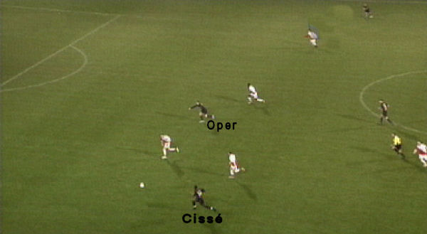
Cissé bedient de vragende Oper die zich na de pass voor het doel vastloopt
tussen Utrechtverdedigers.
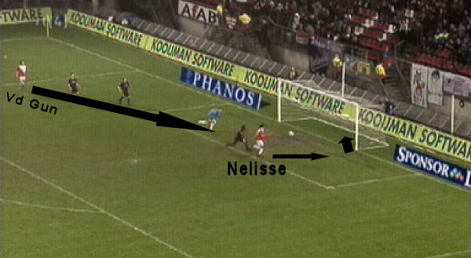
Na een overtreding van Meeuwis volgt een vrije trap die bij Van der Gun
terecht komt. Deze speelt de bal
op Nelisse die bij de tweede paal kan intikken: 1-0, (31').
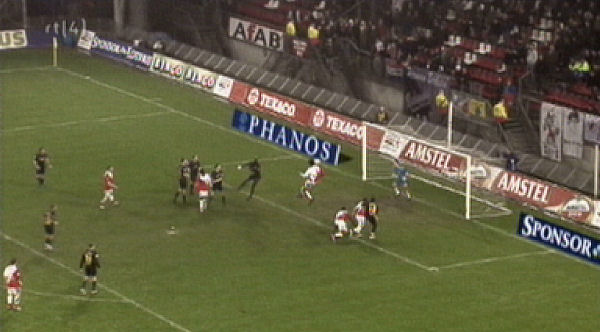
Drie minuten later kopt Nelisse uit een assist van Caluwé 2-0 binnen, (34').
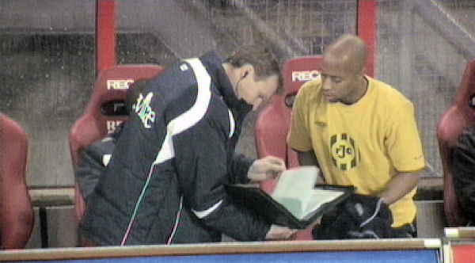
Kah speelt een ongelukkige wedstrijd en wordt eruit gehaald voor nieuwe
aanwinst Wau.
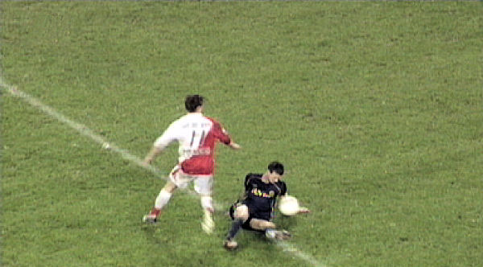
De Fauw krijgt binnen de zestien de bal tegen zijn arm/borst.
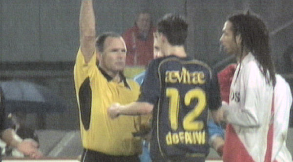
Bossen ziet er een strafschop in.
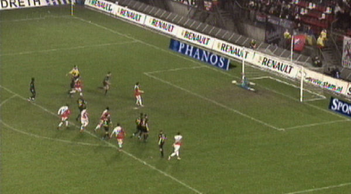
Oud-Rodaspeler Van Dijk benut de penalty: 0-3, (37'). In zes minuten tijd
wordt Roda opgerold...
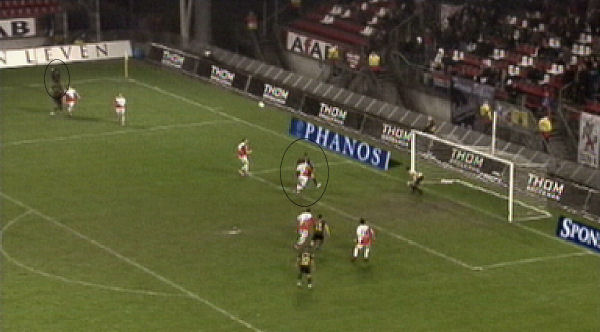
Cissé verzendt een bal naar de kop van Oper die voor zijn man komt en
inkopt: 1-3, (53').
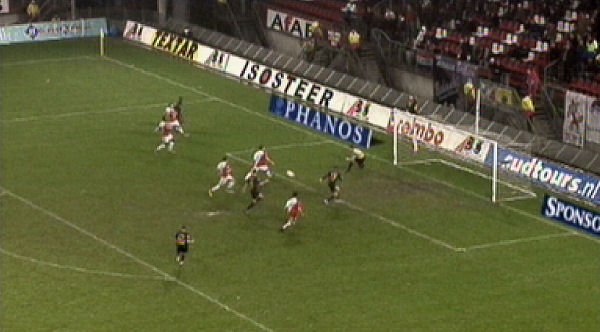
Alweer een goede pass van Cissé op Oper, maar Andres stapt vrij voor doel
over de bal.
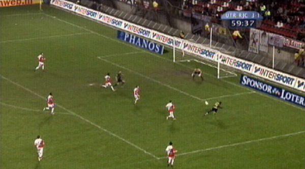
Kansen genoeg maar niet benut zoals dit te simpel diagonaal schot van Tioté.
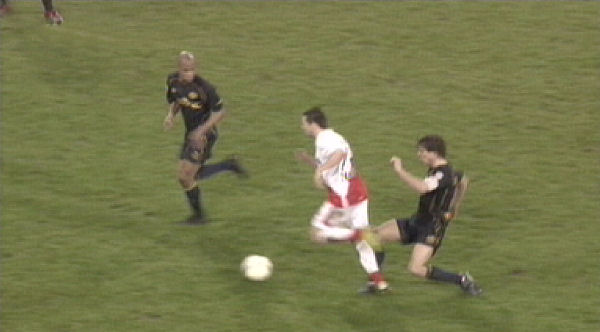
Meeuwis collecteert vijf minuten voor tijd zijn tweede gele kaart en kan
inrukken.
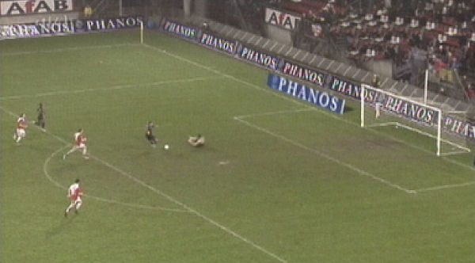
Oper bewijst eens te meer geen afmaker te zijn. Hij loopt zich vast op
keeper Vorm.